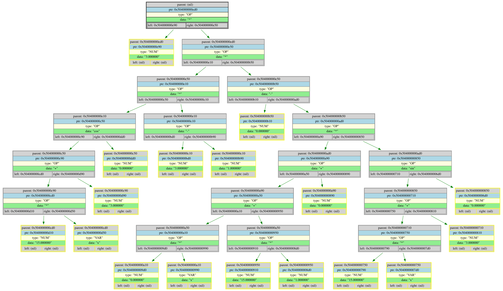

=========================================================================================
Func: FillTreeWithDiff
Differenciated tree
=========================================================================================
=====INIT_INFO=====
FILE: main.cpp /-----/ FUCK: main /-----/ LINE: 26 /-----/ NAME: diff_tree
ERROR_CODE: 2
TreeDump(diff_tree[0x7ffca271a240]) {
number_of_elements = 0 (BAD!)
}
